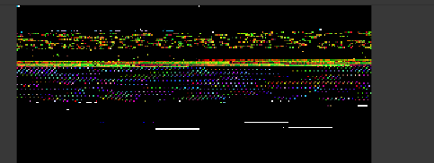
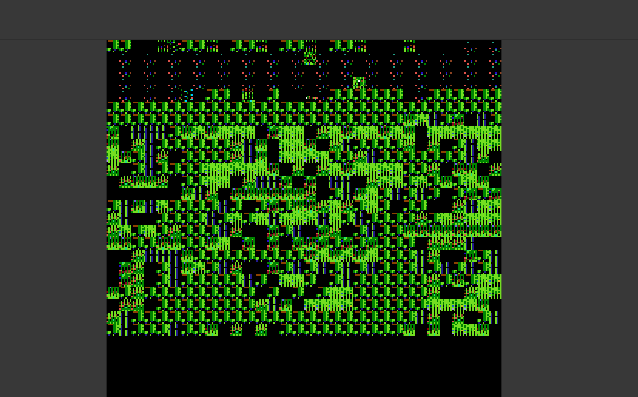
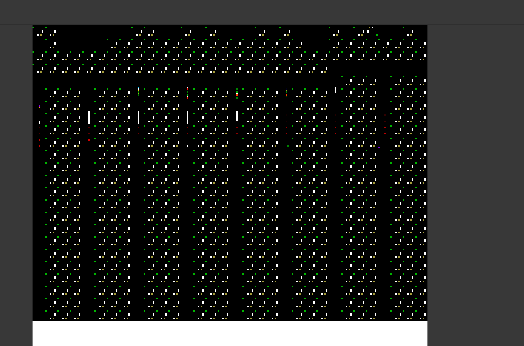
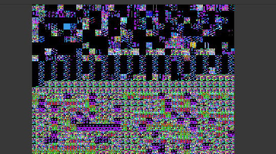
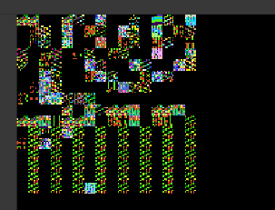
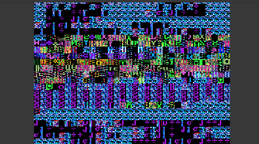
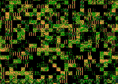

PAlib technical Info
index
PAGfx
PAGfx is a tool used for converting graphics to be able to be used with PAlib. Or basically it converts the graphics to a format that the Nintendo DS can use. It is basically grit renamed with more source
The PAGC frontend
The PAGc frontend is a UI for PAGfx that sets up the config file for convertion, it allow you to select the files.
Libnds And PAGfx DO NOT MIX WELL.
I was recently trying to get PAGfx working on libnds to be able to get it working, Big mistake
I tried more than 6 times, 3 different modes, tiled, 8 bit, and sprites.
With BGs it causes screen corruptions, it also needs changes to the PAGfx converted files or else it won't compile
Here I put the corruptions







This is how PAGfx works.
First of all it dectects a file called "PAGfx.ini", it contains the directory of the files and the configuration itself.
Next it creates a file called "all_gfx.h", it contains all the image definitions. For older PAGfx versions it creates also a all_gfx.c file.
For each image PAGfx creates a C file with the name of the image that was converted. It contains some definitions.
for Backgrounds it creates a PA_BgStruct struct and defines everything.
for sprites it creates a C file containing the variables needed for the PAlib.